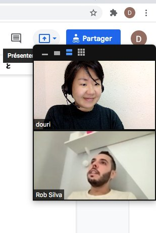
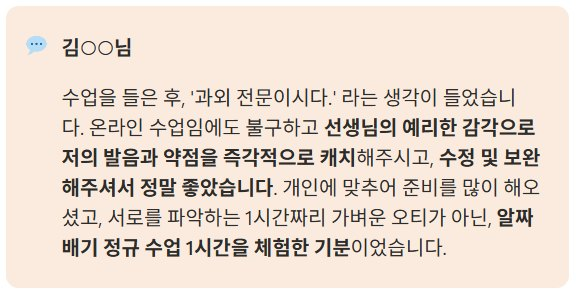
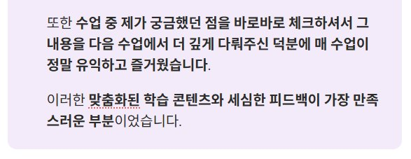
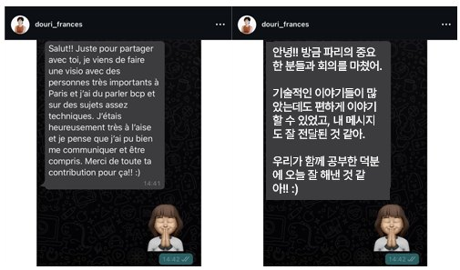
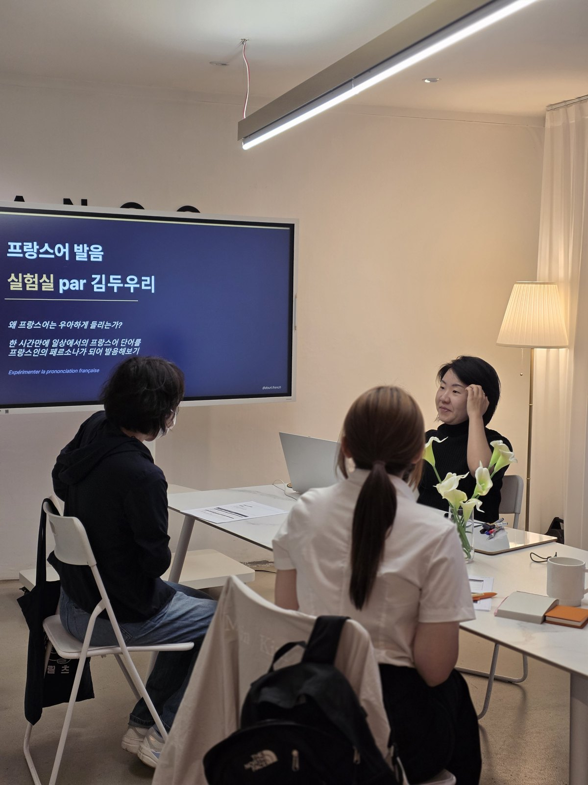

🎓 수업 이야기
프랑스어 과외 16년,
학생들이 직접 말해준 재수강 이유 5가지
대부분의 학생들은 3개월 안에 과외를 그만둡니다.
평균 1, 2년을 함께한 제 학생들이 직접 알려준
재수강의 이유 딱 5개만 읽고 가세요!

프랑스어 과외를 16년 하면서 가장 자주 받는 질문은 "왜 학생들이 오래 남느냐"는 것입니다. 답은 제가 만든 게 아니라 학생들이 직접 알려줬어요. 다섯 가지로 정리했습니다.
먼저 읽는 요약
대부분의 학생은 3개월 안에 프랑스어 과외를 그만둡니다. 제 학생들은 평균 1, 2년을 함께했어요. 학생들이 직접 알려준 재수강 이유 다섯 가지를 그대로 옮깁니다.
- 첫 수업 전에 이미 상담이 끝나 있습니다
- 커리큘럼이 고정돼 있지 않습니다
- 왜 막히는지 4개 국어로 설명합니다
- 문법이 아니라 프랑스식 사고방식을 다룹니다
- 수업이 끝난 뒤에도 자립 학습이 이어집니다
1:1 프랑스어 맞춤화 수업을 16년째 진행하고 있습니다.
- 100명 이상의 다양한 국적의 학생들과 공부했어요.
- 평균 1.2년씩 함께했고
- 누적 수업 시간이 1,000시간을 넘습니다.
이 숫자들은 하루 만에 만들어진 게 아니에요. 학생들이 저에게 직접 알려준 재수강 이유는 딱 다섯 가지였어요.

1. 첫 수업 전에 이미 준비가 끝나 있습니다
지금까지 어떻게 공부해 왔는지, 어디서 막혔는지, 앞으로 어떤 목표가 있으신지를 기반으로 첫 티키타카 소통이 이루어집니다. 체험 수업도 마찬가지예요.
대부분의 프랑스어 과외 선생님들도 첫 시간을 "서로를 알아가는 시간"으로 사용하지만, 저는 이 과정이 이미 사전 상담에서 끝났어요. 그래서 체험 수업 60분은 실제 커리큘럼의 첫 번째 챕터예요.


2. 프랑스어 과외 커리큘럼은 어떻게 되나요
1:1 과외를 찾으시면서 자주 듣는 질문입니다. "커리큘럼은 어떻게 되나요?"
제 프랑스어 과외의 경우, 동일한 표현, 이론도 학생이 바뀌면 설명 방식, 예시 등 수업 전체가 바뀝니다. 10회 수업을 완료하신 학생이 이렇게 말씀해 주셨어요.

고정된 커리큘럼이 아니기 때문에 제가 더 도와드릴 수 있는 분들이 있습니다.
- 독학은 시작했는데 뭔가 제자리인 느낌
- 단어는 50개 외웠는데 입에서 문장이 안 나옴
- 다섯 가지 다른 상황에서도 동일한 문장만 사용
저는 프랑스어 독학의 문제점 점검, 정체기에서 레벨업이 전문입니다.
3. 프랑스어 원어민 선생님이 꼭 좋을까요
"프랑스 원어민한테 배우는 게 좋지 않나요?" 꼭 그렇지 않아요. 원어민이 학생의 모국어에 대한 지식이 없다면 학생이 왜 막히는지 설명이 어렵거나, 잠재력을 끌어내는 데에 제약이 있을 수 있습니다.
저 역시 한국어를 모국어로, 영어, 프랑스어, 포르투갈어를 제2외국어로 공부했습니다. 각 언어를 쓰는 학생들이 프랑스어를 어떻게 처리하는지, 각자의 언어로 직역을 한 것인지 파악이 됩니다.
만약 제가 50회를 수강한다는 러시아 학생과 20회를 수강한다는 브라질 학생 두 사람 중 선택을 한다면, 저는 주저 없이 브라질 학생과 공부를 할 겁니다. 이 학생이 가지고 있는 포르투갈어 기반의 뇌의 구조를 전환할 수 있는 능력이 있기 때문이에요.
저는 학생과 선생님과의 건설적인 상호적 정보 교환을 중요시해요. 즉 타 언어의 구사 능력은 단순히 새로운 단어 학습을 넘어선, 언어로써의 사고 전환이 이루어집니다.
4. 문법 말고 프랑스식 사고방식 배우기
외국어로써의 프랑스어(Français Langue Étrangère, FLE) 튜터이기 전에 프랑스 고등 교육과정을 밟았습니다. 프랑스 수능 바칼로레아를 준비하면서 프랑스식으로 논리를 세우고, 토론하고, 글 쓰는 방식을 몸으로 부딪치며 익혔습니다.
그래서 단순히 "이럴 때 조건법을 써요" 보다는, 프랑스 사람들이 이 표현을 실제로 어떤 상황에서 어떤 뉘앙스로 쓰는지까지, 어떠한 사회문화적 맥락이 있는지를 같이 알려드려요. 문법, 회화 패턴의 규칙이 아니라 태도가 되는 거예요.
학업과 동시에 인턴십을 시작으로, 프랑스에서 사회 커리어를 이어갔습니다. 덕분에
- 이력서와 함께 첨부하는 Lettre de motivation (동기 편지, 한국에서는 자소서의 개념)
- 면접 인터뷰
- 사무실에서의 협업에 필요한 비즈니스 프랑스어
등 프랑스 사람들의 논리적인 사고 구조가 들어간 맥락들을 함께 짚을 수 있습니다.
5. 수업이 끝난 뒤에도 혼자 이어갈 수 있게
매 수업이 끝나면 다음 세션 전까지 볼 수 있는 학습 자료들을 선별해 드려요. 이 선후 학습 또한 각 학생의 컨디션, 스케쥴, 선호하는 방식에 따라 정리해 드립니다.
"이거 꼭 해오세요.", "왜 안 하셨어요?"가 아니라 프랑스어 과외라는 여정이 끝나더라도 자립적으로 학습을 습관화하는 훈련이기도 합니다.
그리고 그거 아세요? 수업 후, 카톡으로 가장 많이 질문하고 얻어가는 학생의 실력은 놀랍게 향상합니다! 16년 동안 평균 1, 2년씩 함께했던 이유 중 하나가 이 흐름이에요.

프랑스어 과외를 찾는 이유는 다 달라요.
- 프랑스 국제 커플, 가족과의 의사 소통
- DELF, TCF와 같은 국제 인증 시험 준비
- 꿈 꿔오던 프랑스어 공부를 혼자 시작했는데 막막하신 분들
이유가 뭐든, 공통점이 하나 있어요. 이 글을 여기까지 읽었다면, 무언가 차별화된 프랑스어 과외로 바꾸고 싶다는 마음이 있으실 거라고 생각됩니다.
수업 페이지에 커리큘럼, 패키지, 학생들의 후기, 자주 묻는 질문까지 다 정리해뒀어요. 프랑스어 공부가 정말 간절하시다면, 함께 성장할 수 있는 선생님이 필요하다면 문의 주세요!
김두우리, 16년차 프랑스어 FLE 전문 코치
한국 학생들이 어디서 막히는지 아는 사람이 씁니다. 1:1 맞춤 수업과 한불 통번역을 합니다.이력 보기
관련 칼럼